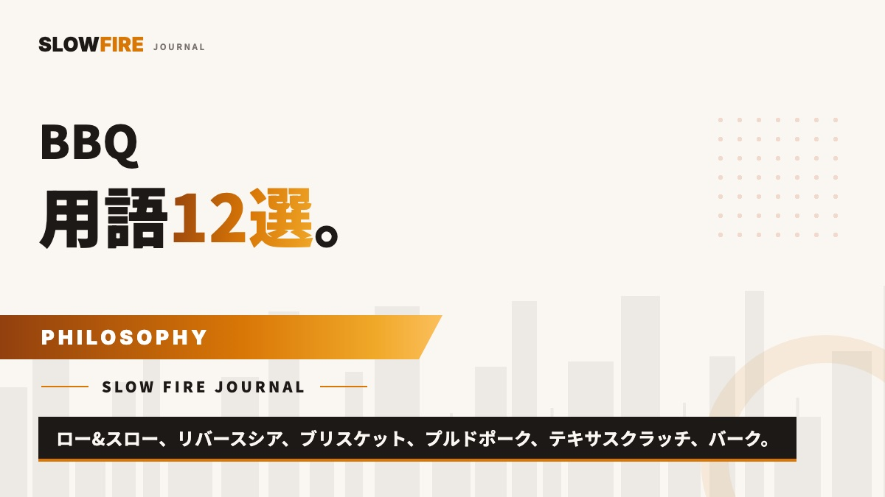

BBQ用語12選 — 海外BBQ動画が3倍楽しくなる入門ガイド
YouTubeやInstagramで海外のBBQ動画を見ていて、「いまの単語、なんだろう？」と置いていかれた感じになったこと、ありませんか？ ロー&スロー、テキサスクラッチ、バーク、プラトー、レンダリング……。一見マニアックに聞こえますけど、結論から言うと、たった12の単語さえ押さえれば、世界中のBBQ動画やSNSの会話が一気に解像度高く見えてくるんですよね。この記事は、BBQに少しでも興味を持った方が「次の一歩」を踏み出すための、いわば最初の地図のようなものだと思ってください。

用語を覚えると、なぜBBQが楽しくなるのか
料理用語を覚えることは、味そのものを変えるわけではありません。けれども、料理を見る解像度を変えます。
「肉を焼く」という一言が、「110℃でインダイレクトに6時間置き、プラトーを越えてからテキサスクラッチで包み、92℃で取り出して45分レストする」という分解された手順に見えるようになると、目の前の肉に対して何を観察すべきかが明確になります。火を支配しようとするのではなく、火の役割を理解できるようになる——これがBBQを「焼く」から「料理する」へと変えていく分水嶺なんですよね。
本記事では、海外BBQ動画やSNSで頻出する12の用語を、3〜4語ずつ4つのグループに分けて解説します。「これだけ知っていれば、世界中のBBQ動画が3倍楽しくなる」というセレクションです。
まず押さえる3語：ロー&スロー / インダイレクト / ラブ
この3語が、アメリカンBBQの土台です。残り9語は、すべてこの3語の周辺概念として配置できます。
① ロー&スロー（Low and Slow）
110〜120℃の低温で、6〜12時間かけて肉を焼く調理思想のことです。アメリカンBBQの根幹で、ブリスケット・プルドポーク・バックリブはすべてこの方法で作られます。焼肉スタイル（300℃前後・数分）とは火加減も時間もまったく違う、別の料理体系です。
低温で長時間加熱すると、硬い結合組織（コラーゲン）がゼラチン化し、口の中でほどける食感が生まれます。これが「BBQの王様」と呼ばれる料理の共通点です。
→ 詳しくは ロー&スロー BBQとは何か。コラーゲンを理解する料理
② インダイレクト（Indirect Heat）
火の真上ではなく、火から離れた位置に肉を置いて焼く方法です。直接火に当てる「ダイレクト」の対義語ですね。ロー&スローは必ずインダイレクトで行います。
炭やバーナーを片側に寄せて、反対側に肉を置く「ツーゾーン配置」が代表的な技法です。フタを閉めればグリル全体が110℃前後の対流オーブンとして機能します。蓋がないと成立しない調理法なので、海外BBQでは蓋付きグリル（Weber Kettle等）が標準です。
③ ラブ（Rub）
肉に擦り込む（rub = こすりつける）粉末状のスパイスミックスのことです。塩・砂糖・パプリカ・コショウ・ガーリックなどがベースで、ブランドごとに調合が異なります。日本のBBQに当てはめると、塩コショウ＋焼肉のタレ的な万能調味料、とイメージするとわかりやすいかもしれません。
BBQの味の方向性は、ほぼラブで決まります。SLOW FIRE SHOPで扱う Low n Slow Basics や Butcher's Axe は、オーストラリアでBBQ世界選手権の常連が使う本格派のラブです。
→ 選び方は BBQラブの選び方。食材から逆算する5つの軸
調理法の用語：リバースシア / テキサスクラッチ / レスト
④ リバースシア（Reverse Sear）
「先に低温で内部を温め、最後に高温で焼き目をつける」逆算の調理法です。伝統的な「強火で表面を焼いてから中を温める」をひっくり返した手法で、3cm以上の厚切り肉では、いちばん再現性高く均一なロゼ色に仕上がります。トマホーク・プライムリブ・厚切りリブアイなんかの定番手法ですね。
→ 詳しくは リバースシア法とは。BBQの逆算思考でステーキを焼く
⑤ テキサスクラッチ（Texas Crutch）
長時間BBQの途中で、肉をアルミホイルかブッチャーペーパーで包む工程のことです。テキサス州で「松葉杖（Crutch）」と呼ばれたのが起源で、後述の「プラトー」を突破するために使われます。
包んであげると、蒸発による表面冷却が止まって、温度上昇が再開するんですよね。日本では単に「ラップ」と呼ばれることもあります。アルミホイルは保湿性が高く（ジューシー仕上げ）、ブッチャーペーパーは適度に水分を逃がす（バークを守る）ので、仕上げたい質感で使い分けてあげてください。
⑥ レスト（Resting）
焼き終わった肉を、すぐ切らずに休ませる工程のことです。加熱で外側に押し出された肉汁が、休ませる間に内部へ戻っていきます。目安は厚切りステーキで5〜10分、ブリスケットなら45〜60分くらい。
レストを怠ると、切った瞬間に肉汁がまな板に流れ出して、口に入る前に旨味が逃げてしまうんですよね。「焼き終わった瞬間が完成」ではなく、「レストが終わった瞬間が完成」。これだけは覚えておいてください。
肉と火の現象：バーク / プラトー / レンダリング / スモークリング
ここから4つは、ロー&スロー中に肉の中で起きている「現象」の名前です。料理を観察する解像度を一段上げます。
⑦ バーク（Bark）
ラブが肉表面で長時間反応してできる、黒〜深褐色の殻のことです。日本語の「焦げ」とは別物で、メイラード反応・ペリクル形成・ラブの結晶化が複合して生まれる、BBQの旨味の核心なんですよね。バークが綺麗にできた瞬間、ピットマスターは静かに笑うんです。
⑧ プラトー / ステール（Plateau / Stall）
ロー&スロー中、内部温度が70〜75℃あたりで数時間動かなくなる現象のことです。肉表面の水分が蒸発する気化熱で、ちょうど熱の入りと冷えがバランスしてしまうため起きるんですよね。
初心者は「もう壊れた、火力が足りない」と慌てて温度を上げがちですが、ここで耐えるのが上級者。テキサスクラッチで包めば突破できます。プラトーを「敵」ではなく「BBQの仕様」と捉えられるようになると、BBQの世界が変わります。
⑨ レンダリング（Rendering）
肉の中の脂が、ゆっくり溶けて全体に行き渡る現象のことです。低温長時間調理で起きる、もう一つの大事な現象ですね。脂が溶けることで、コラーゲンのゼラチン化と相まって、口の中でほどける食感とコクが生まれます。
急激な高温だと、脂は溶けずに焼け落ちてしまいます（これが焼肉スタイル）。ロー&スローは、脂の挙動そのものを変える調理法とも言えるかなと思います。
⑩ スモークリング（Smoke Ring）
燻製された肉を切ったとき、外側数mmにできるピンク色のリングのことです。煙に含まれる一酸化窒素が、肉のミオグロビンと反応して固定されることで生まれます。BBQ大会では「スモークリングの厚さ」が審査項目になるほど、ピットマスターの腕の象徴とされてきました。
科学的には味への寄与は限定的とも言われますが、視覚的な美しさは BBQ文化の中で長く愛されています。
代表料理：ブリスケット / プルドポーク
用語ではなく料理名ですが、海外BBQ動画では最頻出。この2つを知っていれば、9割の動画が読み解けます。
⑪ ブリスケット（Brisket）
牛の胸肉を、110℃で10〜14時間ロー&スローで焼くテキサスBBQの最高峰です。塊で4〜6kg、価格も時間もそれなりに覚悟が必要な料理ですけど、完成した瞬間の感動は格別なんですよね。テキサス州では、ブリスケットの仕上がりが、その店の評価そのものになるくらいです。
→ 詳しくは ブリスケットの作り方。12時間、肉と話す料理
⑫ プルドポーク（Pulled Pork）
豚肩ロースを110℃で8〜10時間焼き、中心温度97℃で「手でほぐれる」状態にする料理です。ほぐした肉をバンズに挟むサンドイッチが、アメリカ南部の国民食になっています。最初のロー&スロー体験としては、いちばん再現性が高い料理かなと思います。
→ 詳しくは プルドポークの作り方。10時間、その場にいる料理
次の一歩
12語を一気に読むと多く感じるかもしれませんが、実際にBBQ動画を見ながら一つずつ「あ、これか」と接続していけば、1週間で全部馴染みます。
用語が馴染んだら、次は焼肉スタイルからアメリカンBBQへの最初の一歩か、最も再現性の高いプルドポークから実践に入るのがおすすめです。
BBQは、本来「火と肉と時間と人」の関係を見つめる料理だと思っています。用語は、その関係を観察するための最初の言葉のようなものです。覚えるためではなく、見えるようになるために、ぜひ使ってみてください。
CONCLUSION
結論
BBQ用語12選 — ロー&スロー / インダイレクト / ラブ / リバースシア / テキサスクラッチ / レスト / バーク / プラトー / レンダリング / スモークリング / ブリスケット / プルドポーク。この12語があれば、海外のBBQ動画は3倍楽しく見えます。
覚えるためではなく、料理と対話する解像度を上げるために。SLOW FIRE JOURNAL の各専門記事と合わせて、深掘りしてみてください。
FAQ
BBQ用語についてよくある質問
BBQ用語を覚える順番に意味はありますか？
まず「ロー&スロー」「インダイレクト」「ラブ」の3つを押さえれば、アメリカンBBQの土台は完成します。残りはこの3つの周辺概念として配置できるため、理解が早くなります。
「テキサスクラッチ」と「ラップ」は違うものですか？
同じものです。長時間BBQの途中で肉をアルミホイルやブッチャーペーパーで包む工程を、テキサス州で「Texas Crutch（テキサスの松葉杖）」と呼んだのが起源。日本では単に「ラップ」と表現されることもあります。
プラトー（ステール）はなぜ起きますか？
肉表面から水分が蒸発する際に気化熱で表面温度が下がり、内部温度の上昇が止まる現象です。70〜75℃前後で数時間止まることもあり、これがBBQで最も忍耐を要する時間帯。テキサスクラッチで包むと突破できます。
「バーク」と「焦げ」の違いは？
バーク（Bark）はラブと肉表面のたんぱく質・脂が低温で長時間反応して形成される、香ばしい褐色の殻のこと。焦げ（炭化）とは温度帯も化学反応も全く違います。バークはBBQの旨味の核心です。
用語を覚えれば味は変わりますか？
間接的に変わります。用語は「料理を分解する解像度」を上げます。バーク・レンダリング・プラトーの存在を知っていれば、火と肉の対話が見えるようになり、火加減の判断が変わる。結果として味も変わります。
FIRST RUB
最初の1本におすすめのラブ
用語を覚えたら、実際に使ってみる。万能タイプから始めるのがおすすめ。